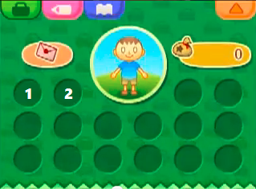

<!DOCTYPE html>
<html>
</html>

<html>
<title>ACNL NTR</title>
<head>
<style>
body {
    background-color: lightgreen;
}

h1 {
    font-family: Impact;
	color: white;
    text-align: center;
}

p {
    font-family: Lucida Sans Unicode;
    font-size: 15px;
}
</style>
</head>
<body>
<h1>Animal Crossing New Leaf NTR Plugin</h1>
<p>This here is the offical page for  the Animal Crossing New Leaf NTR plugin. The author is me, itsRyan or Ryan/RyDog.</p>
<p>Here's it in action: </p>
<iframe width="560" height="315" src="https://www.youtube.com/embed/uBqhoWB1EiM" frameborder="0" allowfullscreen></iframe>
<iframe width="560" height="315" src="https://www.youtube.com/embed/9tlNRpNvr6g" frameborder="0" allowfullscreen></iframe>
<p><strong>What's Included:</strong></p>
<p>This is a plugin that contains a collection of cheats for Animal Crossing New Leaf! These are heavily supported and added every day! Please help support any way you can! These are the cheats:</p>
<p><a href="#text2item">1. Text to Item</a></p>
<p><a href="#dupe">2. Duplication</a><p/>
<p><a href= "#moonjump">3. Moon Jump</a><p/>
<p></p>
<p>4. Coordinates Modifier</p>
<p>5. Teleport</p>
<p>6. Speed Hack</p>
<p>7. Seeder (Set, Destroy, Undo)</p>
<p>8. Search and Replace</p>
<p>9. Instant Tree</p>
<p>10. Destroy All Weeds</p>
<p>11. Water All Flowers</p>
<p>12. Grass</p>
<p>13. Desert</p>
<p>14. Nookling Upgrades</p>
<p>15. Maximum Tan </p>
<p><strong>Multiplayer Usage: </strong></p>
<p>The only cheats that work online and locally are the Inventory Codes and Movement Codes! This means you can Moon Jump, Teleport, or literally fly around other's towns or your own! You can even use all of the Movement Codes indoors! You can even duplicate or spawn any item in someone's town or your own without any hesitation! </p>
<p>Do not open up the cheat menu online/local or you will end the multiplayer session. </p>

<p><strong>How to use each cheat: </strong></p>
<a name="text2item"><p><strong>Text to Item:</strong></p>
<p>Type in the <a href="http://sirbeethoven.github.io/LeafHacks/">item ID</a> you want and press X + D Pad Right to write that item to slot 1 of your inventory </p>
<a name="dupe"><p><strong>Duplication </strong></p>
<p>Press R to dupicate the item from slot 1 to slot 2.</p>

<p></p>

<p><strong>Moon Jump:</strong></p>
<p>Press L to make your character fly! This allows walking over objects and buildings. This works online, but the other character doesn't see you flying.</p>
<p>&nbsp;</p>
<p>&nbsp;</p>
<p>&nbsp;</p>
<p>&nbsp;&nbsp;</p>
<p>&nbsp;</p>
<p>&nbsp;</p>
<p>&nbsp;</p>
<ol></ol>
</body>
</html>
